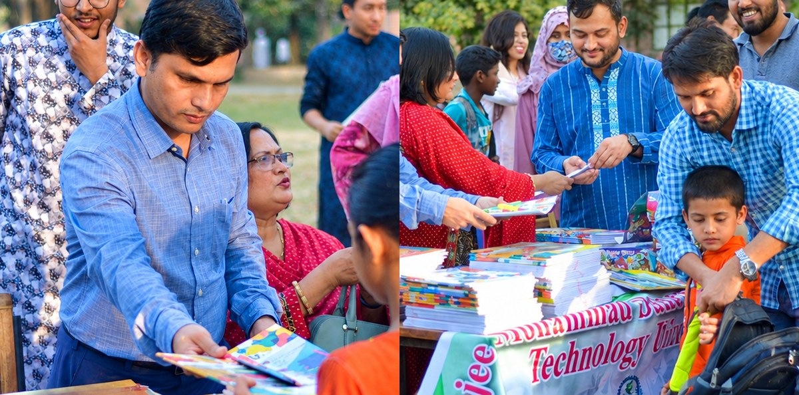
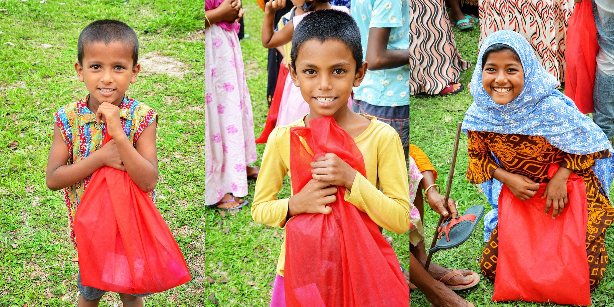
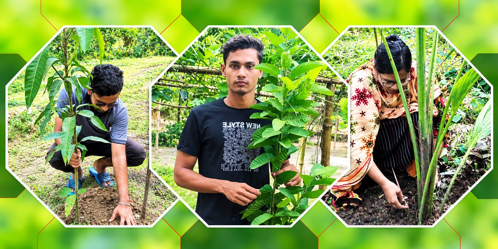

I approach teaching quantitative and policy courses with an emphasis on connecting methods to real policy questions, so that students leave able to both run an analysis and explain what it means for a school, district, or state.
My courses draw on a dual background in economics and development studies to help students see education policy as embedded in broader questions of public finance, labor markets, and human development. Having taught in both a large public university and a resource-constrained international setting, I emphasize practical, hands-on data work — using real administrative and survey data whenever possible — so that methods courses build skills students can carry directly into research or policy jobs.
13Courses taught
2Universities
3Student-led projects
Student Feedback
The comments below are drawn from anonymous end-of-course evaluations I administer after every course I teach.
“
Juwel made STATA more accessible and less foreign to me, a serious beginner! He took extra time, in office hours, to painstakingly help me wrap my head around concepts of causality and broader, conceptual research design questions.
Quantitative Analytical Techniques for Education PolicyPh.D. student, teaching assistant · University of Arkansas, Fall 2024
“
Upon hearing my description of a project I was working on, Juwel made a suggestion for how I could resolve a methodological issue I was struggling with. His suggestion was more advanced than what I understood, and Juwel took the time to sit with me on several occasions to guide me through the process. I appreciated his generosity and patience in helping me craft a project I am very proud of.
Quantitative Analytical Techniques for Education PolicyPh.D. student, teaching assistant · University of Arkansas, Fall 2024
“
One thing you did particularly well was incorporating problem-based group discussions after class. Giving us a specific social policy problem to discuss and encouraging us to work together to find possible solutions made the learning process much more active and engaging. It helped me move beyond simply understanding theoretical concepts and taught me how to apply them to real-world problems, consider different perspectives, and develop solutions through collaborative discussion.
Social Policy and PlanningFourth-year Sociology student · HSTU, Spring 2023
Real-Life Project Development & Implementation
In select courses, I require students to design and implement a real-life project — moving learning beyond the classroom into hands-on execution. Each cohort takes a project from concept to completion: identifying a real need, mobilizing resources, and managing implementation on the ground. Below are some of the initiatives students have brought to life.

Backpacks of Hope — “Let's Share Your Educare”
A school-supply and backpack donation initiative providing bags and educational materials to underprivileged children. Students conceptualized the project and managed it end-to-end, from planning to distribution.
Covered by Ekushey Television (ETV).

Chader Hasi (Smile of the Moon)
An initiative bringing joy to underprivileged children during Eid — the community's biggest festival — by providing them with new clothes. Students independently managed fundraising, beneficiary selection, and distribution.
Covered by Ittefaq.

Zero Carbon Footprint
A personal-action environmental project in which each student calculated their individual carbon footprint and designed a policy response to neutralize it — through initiatives such as tree planting and plastic recycling.
Covered by Ekushey Television (ETV).
These projects reflect a core belief in my teaching: in courses where it fits, students learn policy and social impact best by doing — not just studying.
Courses I Am Prepared to Teach
Introduction to Education Policy
An introduction to the actors, institutions, and major debates shaping K–12 and higher education policy in the United States — from school finance and accountability to teacher labor markets and school choice.
Economics of Education
Applies core microeconomic tools — human capital theory, cost-benefit analysis, and market design — to questions of educational investment, returns to schooling, and the production of student achievement.
Education Finance
Covers how federal, state, and local revenue systems fund K–12 and higher education, and how funding formulas, adequacy, and equity considerations shape resource allocation across schools and districts.
Quantitative Methods for Policy Analysis
An applied methods course covering the statistical techniques education policy researchers use to describe, analyze, and evaluate policy — regression, causal inference, and working with administrative and survey data.
Program Evaluation
Trains students to design and interpret rigorous evaluations of education programs and policies, covering experimental and quasi-experimental methods — from RCTs to regression discontinuity and difference-in-differences designs.
Applied Econometrics
A graduate-level treatment of econometric methods for causal inference — instrumental variables, panel data, and treatment-effect estimation — applied to real datasets in economics and education.
Teaching Experience
Department of Education Reform, University of Arkansas
Ph.D.
EDRE 61003: Quantitative Analytical Techniques for Education Policy
Teaching Assistant · Offered: Fall 2024
Hajee Mohammad Danesh Science and Technology University, Dinajpur, Bangladesh
Junior
DEV 325: Education, Health, Labour, and Human Development
Offered: Spring 2023
Senior
SOC 413: Social Policy and Planning
Offered: Spring 2023
Junior
DEV 313: Poverty and Inequality: Concept, Measurement and Policy
Offered: 2023
Sophomore
DEV 225: NGOs and Development Management
Offered: Spring 2022, Spring 2023
Sophomore
DEV 215: Environment, Development and Sustainability
Offered: Spring 2021, Spring 2022, Spring 2023
Freshman
DEV 125: Technological Revolutions and Development
Offered: Spring 2022, Spring 2023
Freshman
DEV 126: Computing and Data Analysis Skills for Development, Lecture & Lab
Offered: Spring 2022, Spring 2023
Junior
ECN 301: Development Economics
Offered: Fall 2022
Junior
DEV 317: Banking, Finance and Insurance
Offered: Fall 2022
Sophomore
ECN 251: Mathematical Economics
Offered: Spring 2021
Freshman
ECN 125: Macroeconomics
Offered: Spring 2019, Spring 2020, Fall 2021
Freshman
ECN 129: Economics
Offered: Fall 2020
Junior
ECN 307: History of Economic Thought
Offered: Spring 2019
Note: course years/terms above are transcribed as listed on my CV; a couple of dates in the source record overlap and are being verified against university records.